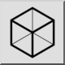

Jest to tłumaczenie automatyczne.
Pasek narzędziowy / ikona:

Menu: Modyfikowanie > Rzutowanie > Rzutowanie izometryczne
Skrót: P, J
Polecenia: isometric | pj
Narzędzie to tworzy rzuty izometryczne (i inne typy rzutów) bieżącego wyboru w rysunku.